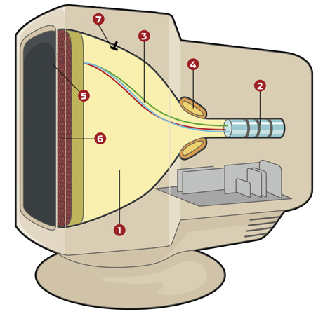
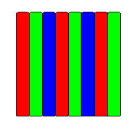

- Monitory kineskopowe CRT
- Monitory ciekłokrystaliczne LCD
- Sposoby podłączenia monitorów
- Dodatkowe informacje
Budowa monitora CRT
CRT to akronim od Cathode-Ray Tube, czyli lampy kineskopowej wyposażonej w działo elektronowe. W języku polskim pod tym słowem przyjęto potoczną nazwę skrótową, synonim dla wyrażenia monitor CRT – czyli oznaczenie modeli monitorów komputerowych, których wyświetlacz oparty jest na lampie obrazowej zwanej kineskopem. Właściwe określenie to monitor kineskopowy.

[1] lampa katodowa (kineskopowa) w formie szklanej próżniowej tuby
[2] działa elektronowe wraz z układami skupiającymi wiązki
[3] wiązki elektronów
[4] cewka odchylająca
[5] luminofor
[6] maska
[7] anoda
[2] działa elektronowe wraz z układami skupiającymi wiązki
[3] wiązki elektronów
[4] cewka odchylająca
[5] luminofor
[6] maska
[7] anoda
Zasada działania monitora CRT
Zasada tworzenia obrazu w kolorowym monitorze CRT polega na wysyłaniu w kierunku przedniej szyby powleczonej warstwą luminoforu, trzech wiązek elektronów (po jednej dla każdego składowego koloru RGB) za pomocą trzech dział elektronowych umieszczonych w tylnej części próżniowej tuby kineskopu. Wiązki te są kierowane za pomocą silnego pola magnetycznego (cewki odchylające) tak, aby trafiały w odpowiedni obszar na luminoforze.Luminofor jest to świecący pigment (fosfor), materiał mający własności świecenia pod wpływem padającego nań promieniowania. Tworząc obraz wiązki przemiatają ekran wzdłuż pojedynczej poziomej linii, zwanej linią wybierania, od lewej do prawej, rozświetlając punkty luminoforu i powodując ich jaśniejsze bądź ciemniejsze świecenie, w zależności od chwilowego napięcia sterującego działem elektronowym.
Częstotliwość pozioma
częstotliwość z jaką monitor rysuje pojedynczą linię obrazu, mierzona w kilohercach [kHz]
Po narysowaniu linii obrazu i osiągnięciu prawego brzegu ekranu wiązki są chwilowo wygaszane, po czym cewki odchylające kierują je na początek następnej linii ku dołowi ekranu i proces następuje od nowa, aż do zapełnienia całego ekranu linia po linii. Gdy cały ekran się zapełni, wiązki znowu zostają wygaszone, po czym cały cykl rysowania obrazu zaczyna się od nowa od góry ekranu (od pierwszej linii).
Częstotliwość odświeżania (pionowa)
częstotliwość z jaką monitor rysuje cały ekran (wszystkie linie obrazu) - podawana w hercach [Hz]. Aby uniknąć migotania ekranu i zmęczenia oczu, obraz w pionie powinien być rysowany 85 razy w ciągu sekundy (częstotliwość odświeżania 85 Hz)
Rodzaje masek w monitorach CRT
Przed warstwą luminoforu znajduje się tzw. maska (ang. shadow mask), która pełni funkcję filtru dbającego o to, aby elektrony uderzały idealnie w powierzchnię wyznaczonych pól luminoforu (subpikseli) - co pozytywnie wpływa na jakość obrazu.
perforowana (IBM Delta)

szczelinowa
(Trinitron, Diamondtron)
szczelinowa
(Trinitron, Diamondtron)

szczelinowo-perforowana
(NEC Cromaclear)
Maska perforowana
występowała w pierwszych monitorach CRT, została opracowana przez firmę IBM. Jej największą wadą jest zbyt duża powierzchnia, co wpływa na obniżenie jasności obrazu
Maska szczelinowa
została po raz pierwszy zastosowana w kineskopach NEC Cromaclear. Stanowi kompromis między dwoma poprzednimi rozwiązaniami - kosztem nieznacznej utraty jakości obrazu zrezygnowano z dwóch drutów stabilizujących. Również koszt produkcji tej maski jest dużo niższy
Maska szczelinowo-perforowana
częstotliwość z jaką monitor rysuje pojedynczą linię obrazu, mierzona w kilohercach [kHz]